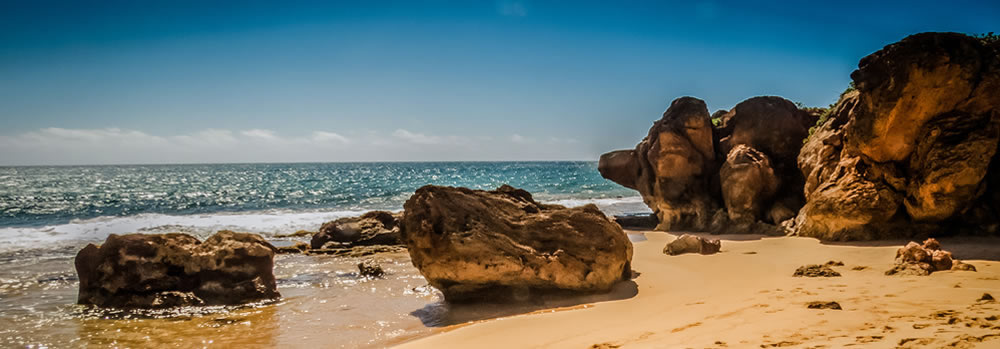

Rooted in the coast. Made for connection.
Our Story
Pacific Trails began with a simple idea: the best way to slow down is to get a little closer to the wild. We created a welcoming place where the redwoods meet the Pacific, and where a day outside ends with good food, warm lights, and room to breathe.



A place to find your pace
Make room for wonder
Some mornings begin with a quiet paddle across glassy water. Others lead up a shaded trail or out to a bluff where the waves do all the talking. However you spend the day, the coast has a way of making ordinary moments feel memorable.
Come as you are, take the long way back, and let the rhythm of the shoreline set the schedule.


Small details, lasting memories
Follow the quiet moments
We believe a stay should leave the landscape as beautiful as you found it. That means caring for the trails, making space for local wildlife, and sharing the little discoveries—a bird calling from the canopy, a new stretch of coastline, the last light on the water.
Our favorite memories are the ones guests make at their own pace, surrounded by the natural character of this place.
See you soon!
We look forward to welcoming you to the coast.
Plan your stay